所感
二次元ファンデルワールス磁性体に関する論文が多かった記憶がある。その他、個人的に気になる論文をピックアップして紹介しています。
論文タイトル一覧
1. 層間スタッキングによって誘起される二次元ファンデルワールス磁性体中の反スキルミオン
・反スキルミオンは、空間的にねじれたスピン構造を持ち、非自明なトポロジーを示す磁気準粒子である。反スキルミオンは、通常、非対称なジャロシンスキー・守谷相互作用（DMI）が必要であるが、これは非常に稀な対称性を持つ結晶でしか観測されていない。
・二次元ファンデルワールス磁性体は、層間相互作用が弱く、層間スタッキングによって物性を制御できる新しい磁性材料である。特に、CrI3やMnI3などの遷移金属トリハライドは、層間スライドによって非対称なスタッキングパターンを形成し、電気分極を持つことができる。
・第一原理計算により、CrI3やMnI3などの二次元ファンデルワールス磁性体の電気分極層間スタッキングが反スキルミオンを実現する可能性が示された。電気分極層間スタッキングは、DMIを誘起し、その方向や大きさを電場によって制御できる。また、Mnドープによって磁気異方性を減少させることで、反スキルミオンのサイズや安定性を改善できることが分かった。
・原子スピンダイナミクスシミュレーションにより、Cr0.88Mn0.12I3電気分極層間スタッキング中に反スキルミオンが形成されることが予測された。さらに、電場によって電気分極を反転させることで、反スキルミオンのスピンテクスチャーも反転することが示された。これらの結果は、二次元ファンデルワールス磁性体中で反スキルミオンを生成し制御する新しい方法を開拓した。
・二次元ファンデルワールス磁性体は、層間相互作用が弱く、層間スタッキングによって物性を制御できる新しい磁性材料である。特に、CrI3やMnI3などの遷移金属トリハライドは、層間スライドによって非対称なスタッキングパターンを形成し、電気分極を持つことができる。
・第一原理計算により、CrI3やMnI3などの二次元ファンデルワールス磁性体の電気分極層間スタッキングが反スキルミオンを実現する可能性が示された。電気分極層間スタッキングは、DMIを誘起し、その方向や大きさを電場によって制御できる。また、Mnドープによって磁気異方性を減少させることで、反スキルミオンのサイズや安定性を改善できることが分かった。
・原子スピンダイナミクスシミュレーションにより、Cr0.88Mn0.12I3電気分極層間スタッキング中に反スキルミオンが形成されることが予測された。さらに、電場によって電気分極を反転させることで、反スキルミオンのスピンテクスチャーも反転することが示された。これらの結果は、二次元ファンデルワールス磁性体中で反スキルミオンを生成し制御する新しい方法を開拓した。
コメント：スキルミオンの制御は難しいイメージがあるが、層間スタッキングやMnドープという簡単な手法で反スキルミオンを実現している点は面白いと思う。
DATE: 28 Jul 2023
Magnetic Antiskyrmions in Two-Dimensional van der Waals Magnets Engineered by Layer Stacking
Kai Huang et al. (University of Nebraska, USA)
arXiv:2307.15769 (cond-mat.mtrl-sci)
Magnetic Antiskyrmions in Two-Dimensional van der Waals Magnets Engineered by Layer Stacking
Kai Huang et al. (University of Nebraska, USA)
arXiv:2307.15769 (cond-mat.mtrl-sci)
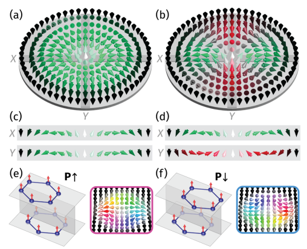
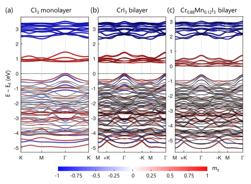
2. 三角格子上のU(1)ディラックスピン液体のスピン・ペイエルス不安定性
・三角格子上のJ1-J2ハイゼンベルグ模型において、J2/J1 = 1/8付近でU(1)ディラックスピン液体（DSL）と呼ばれる量子スピン液体相が実現されることを数値的に示した。
・DSLは、ギャップレスなスピノンとU(1)ゲージ場の強く相互作用する系であり、低エネルギーでは2+1次元の量子電磁力学（QED3）として記述できることを理論的に説明した。
・QED3の摂動として、格子歪みとモノポール演算子との結合を考えた。この結合は対称性によって許されるが、弱結合摂動論では不安定性を引き起こさないことを示した。
・強結合摂動論やスケーリング論を用いて、格子歪みとモノポール演算子との結合が強く関連することを示し、DSLがスピン・ペイエルス不安定性によって12サイトの価電子結合固体（VBS）へと相転移することを導いた。
・密度行列繰り込み群（DMRG）法を用いて、歪んだ三角格子上でDSLとVBS相のエネルギーを比較し、弱結合摂動論やスケーリング論の予測と一致することを確認した。
・DSLは、ギャップレスなスピノンとU(1)ゲージ場の強く相互作用する系であり、低エネルギーでは2+1次元の量子電磁力学（QED3）として記述できることを理論的に説明した。
・QED3の摂動として、格子歪みとモノポール演算子との結合を考えた。この結合は対称性によって許されるが、弱結合摂動論では不安定性を引き起こさないことを示した。
・強結合摂動論やスケーリング論を用いて、格子歪みとモノポール演算子との結合が強く関連することを示し、DSLがスピン・ペイエルス不安定性によって12サイトの価電子結合固体（VBS）へと相転移することを導いた。
・密度行列繰り込み群（DMRG）法を用いて、歪んだ三角格子上でDSLとVBS相のエネルギーを比較し、弱結合摂動論やスケーリング論の予測と一致することを確認した。
コメント：DSLは、実験的に観測された三角格子上の量子スピン液体候補材料に関連する可能性がある重要な相である。本研究では、DSLが格子歪みに対して非常に敏感であり、微小な歪みでもVBSへと相転移することを示した。これは、実験的にDSLを観測する際に注意すべき点である。DSLは、QED3という強く相互作用する共形場理論で記述されるため、厳密な解析が困難である。本研究では、QED3の摂動展開やブートストラップ法などの様々な手法を駆使して、DSLの不安定性や臨界温度などの物理量を計算した。これらの手法は、他の強相関系にも応用できる可能性がある。
関連記事： Phys. Rev. Lett. 112, 177201 (2014) 有機三角格子系における量子スピン液体の発見と磁気励起の系統的理解
補足：この研究の背景は、三角格子上で反強磁性的に結合したスピン1/2が、幾何学的フラストレーションの効果で量子力学的に揺らぎ続ける「量子スピン液体」と呼ばれる状態が実現する可能性があるという理論的予言に基づいている。量子スピン液体は、基礎物理と応用の両面で重要な量子現象ですが、フラストレーションのある量子スピン模型においては、さまざまなスピン配置のパターンが小さいエネルギースケールで競合し合うために、理論的な取り扱いが難しくなる。そのため、量子スピン液体相が実際に存在するかどうか、また存在した場合にどのような性質のスピン液体なのかは、物理の分野で長年議論されてきたものの、いまだに決着しない。この研究では、新たに合成された有機二次元三角格子モット絶縁体を用いて、低温における磁気特性を測定し、極低温において長距離磁気秩序が存在せず、スピンが常磁性的に振る舞っていることを突き止めた。これは、三角格子のフラストレーションのために極低温において長距離磁気秩序が抑制された量子スピン液体状態が実現していることを示唆している。さらに、量子スピン液体状態を特徴づける準粒子がギャップレスの磁気励起を担っているという強い実験的証拠を示すことに成功した。
想定される応用：・量子コンピュータ：量子スピン液体中で発生するスピノンと呼ばれる分数化した粒子は、通常のスピンとは異なる量子もつれの特性を持つ。これを利用して、ノイズや外乱に対して耐性がある安定な量子ビットを作り出すことができる可能性がある。・スピントロニクス：量子スピン液体中では、スピンの向きが揺らぎ続けるため、磁気抵抗が低下し、低消費電力での情報伝達や処理が可能になると期待されている。また、スピノンは電荷を持たないため、電場による制御が容易であり、新しい磁気デバイスの開発に役立つと考えられている。高温超電導：量子スピン液体中では、スピノンの相互作用によって電子対が形成されることが提案されている。この電子対は、高温で超伝導を起こす可能性がある。これは、エネルギー変換や輸送におけるエネルギー損失を大幅に削減することができるという点で重要である。
関連記事： Phys. Rev. Lett. 112, 177201 (2014) 有機三角格子系における量子スピン液体の発見と磁気励起の系統的理解
補足：この研究の背景は、三角格子上で反強磁性的に結合したスピン1/2が、幾何学的フラストレーションの効果で量子力学的に揺らぎ続ける「量子スピン液体」と呼ばれる状態が実現する可能性があるという理論的予言に基づいている。量子スピン液体は、基礎物理と応用の両面で重要な量子現象ですが、フラストレーションのある量子スピン模型においては、さまざまなスピン配置のパターンが小さいエネルギースケールで競合し合うために、理論的な取り扱いが難しくなる。そのため、量子スピン液体相が実際に存在するかどうか、また存在した場合にどのような性質のスピン液体なのかは、物理の分野で長年議論されてきたものの、いまだに決着しない。この研究では、新たに合成された有機二次元三角格子モット絶縁体を用いて、低温における磁気特性を測定し、極低温において長距離磁気秩序が存在せず、スピンが常磁性的に振る舞っていることを突き止めた。これは、三角格子のフラストレーションのために極低温において長距離磁気秩序が抑制された量子スピン液体状態が実現していることを示唆している。さらに、量子スピン液体状態を特徴づける準粒子がギャップレスの磁気励起を担っているという強い実験的証拠を示すことに成功した。
想定される応用：・量子コンピュータ：量子スピン液体中で発生するスピノンと呼ばれる分数化した粒子は、通常のスピンとは異なる量子もつれの特性を持つ。これを利用して、ノイズや外乱に対して耐性がある安定な量子ビットを作り出すことができる可能性がある。・スピントロニクス：量子スピン液体中では、スピンの向きが揺らぎ続けるため、磁気抵抗が低下し、低消費電力での情報伝達や処理が可能になると期待されている。また、スピノンは電荷を持たないため、電場による制御が容易であり、新しい磁気デバイスの開発に役立つと考えられている。高温超電導：量子スピン液体中では、スピノンの相互作用によって電子対が形成されることが提案されている。この電子対は、高温で超伝導を起こす可能性がある。これは、エネルギー変換や輸送におけるエネルギー損失を大幅に削減することができるという点で重要である。
DATE: 14 Aug 2023 (v2), 23 Jul 2023 (v1)
Spin-Peierls instability of the U(1) Dirac spin liquid
Urban F. P. Seifert et al. (University of California, Santa Barbara, USA)
arXiv:2307.12295 (cond-mat.mtrl-sci)
Spin-Peierls instability of the U(1) Dirac spin liquid
Urban F. P. Seifert et al. (University of California, Santa Barbara, USA)
arXiv:2307.12295 (cond-mat.mtrl-sci)
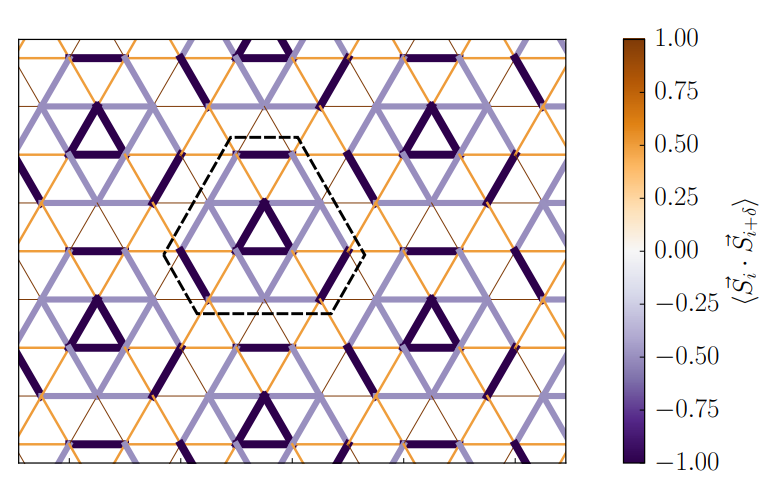
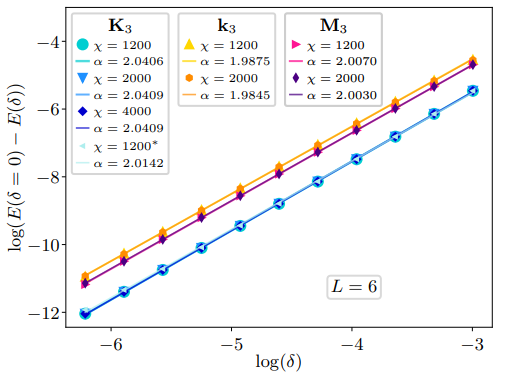
3. 量子、原子、連続体システムにおける科学のための人工知能
・AI for Scienceという新しい研究分野、特に、量子、原子、連続体という3つのスケールで自然現象を理解するためのAIの手法について、技術的に詳細に解説しています。AI for Scienceとは、自然科学の発見を促進するために、人工知能（AI）の技術を利用することである。
・量子、原子、連続体システムにおけるAIの手法は、分子の3次元構造や物理的・化学的性質を考慮した表現学習や予測・生成タスクに有効である。
・これらの手法の設計においては、分子の対称性や表現力、効率性などの課題に対処する必要がある。
・既存の手法は、特徴量のテンソル次数とGNN層のボディ次数という2つの観点から分類できる。
・テンソル次数が高いほど、分子の3次元情報をより豊かに表現できるが、計算コストや実装難度も高くなる。ボディ次数が高いほど、分子の局所的な幾何学的特徴をより正確に捉えられるが、組み合わせ爆発や冗長性も発生する。
コメント：AI for Scienceという新しい研究分野に関する263ページにもなるサーベイ論文で、時間をとってじっくり読み込みたいところです。いつかAIが自然科学の理解を深めて、全解明する日は来るのだろうか。
DATE: 17 Jul 2023
Artificial Intelligence for Science in Quantum, Atomistic, and Continuum Systems
Xuan Zhang et al. (Texas A&M University, USA)
arXiv:2307.08423 (cs.LG)
Artificial Intelligence for Science in Quantum, Atomistic, and Continuum Systems
Xuan Zhang et al. (Texas A&M University, USA)
arXiv:2307.08423 (cs.LG)
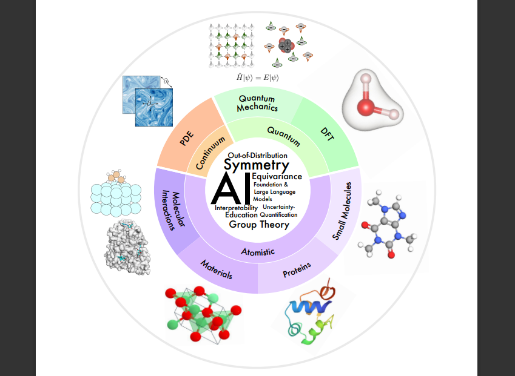
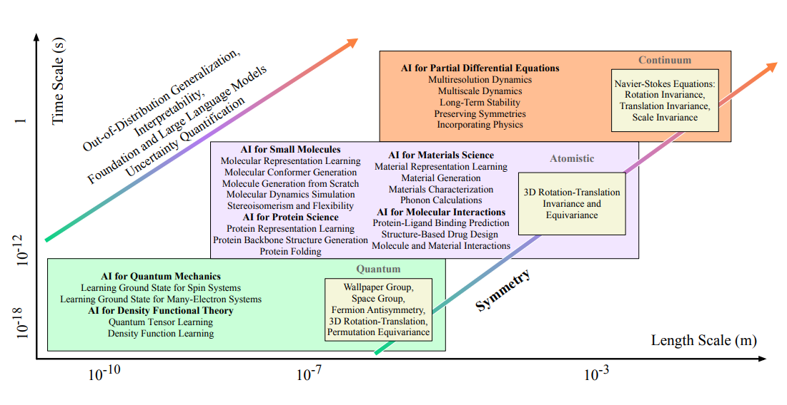
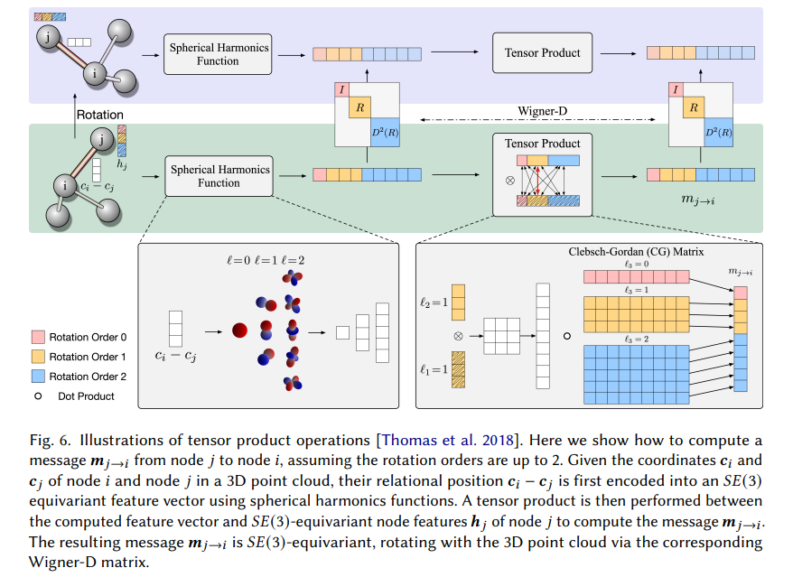
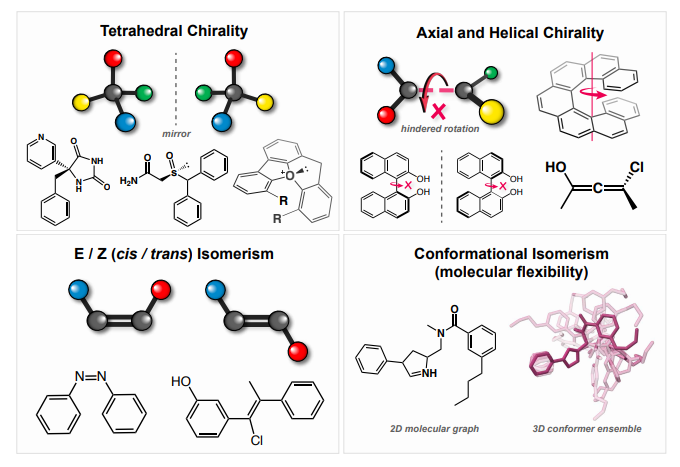
 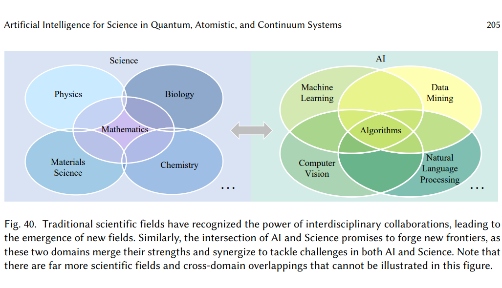
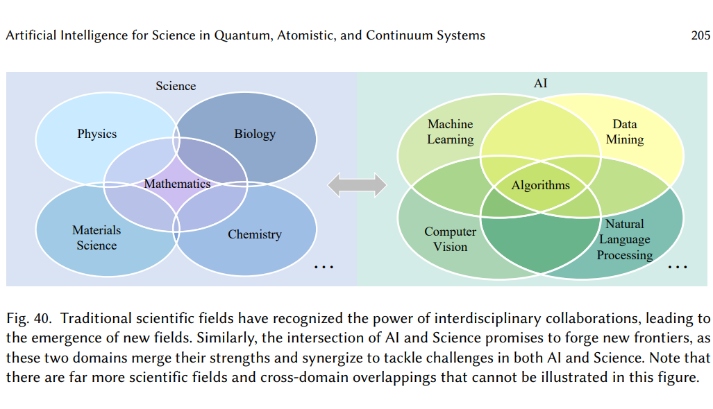
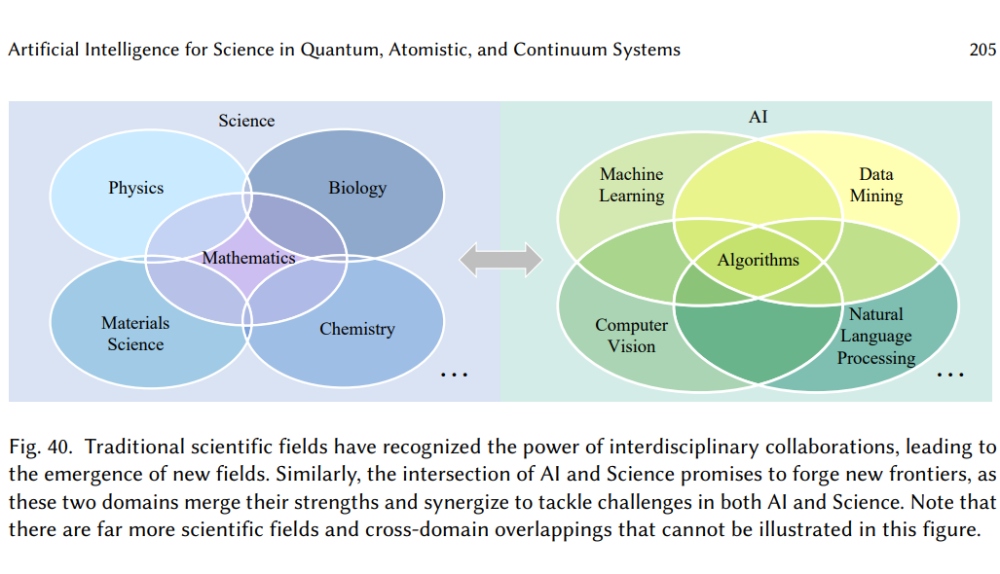
4. 機械学習を用いたフェロ磁性層のフィボナッチ準結晶積層における特異な磁気相の解明
・ディープマテリアルネットワーク（DMN）は、複雑な異方性材料の応答を表現するために、解析的均質化解を持つ単純なビルディングブロックを接続した多層ネットワークである。
・DMNは、線形弾性データで学習した後、非線形や非弾性の材料法則に対しても挙動を予測できる高速な代替モデルとして機能する。
・DMNのパラメータは、通常はランダムに初期化されるが、これは学習精度や予測信頼性に影響を与える。
・DMNのパラメータを、各層での重みと法線ベクトルを用いて類似の単位セルとして可視化することで、ネットワークの説明性を向上させることができる。
・可視化したDMN単位セルをパッチとしてキルティングし、より深いネットワークの初期化に用いることで、再帰的な学習戦略を実現し、学習精度や予測信頼性をさらに向上させることができる。
・DMNは、線形弾性データで学習した後、非線形や非弾性の材料法則に対しても挙動を予測できる高速な代替モデルとして機能する。
・DMNのパラメータは、通常はランダムに初期化されるが、これは学習精度や予測信頼性に影響を与える。
・DMNのパラメータを、各層での重みと法線ベクトルを用いて類似の単位セルとして可視化することで、ネットワークの説明性を向上させることができる。
・可視化したDMN単位セルをパッチとしてキルティングし、より深いネットワークの初期化に用いることで、再帰的な学習戦略を実現し、学習精度や予測信頼性をさらに向上させることができる。
コメント：布の重ね縫いに見立てたキルティング戦略により、データ量を増やし精度向上に貢献しているようだ。
補足：DMNは、物理的な意味を持つビルディングブロックを用いているため、単位セルとして可視化することが可能であり、これは他のデータ駆動型の材料モデリング手法では困難である。DMN単位セルの可視化は、学習過程や最適化されたパラメータを直感的に理解するだけでなく、マクロ的な応答だけでなく局所的な応力やひずみ分布も再現できることを示している。また、DMNは、線形弾性特性のデータセットに基づいて学習するが、一度学習したら再学習することなく、非線形や非弾性などの一般的な構成則に対しても材料の挙動を外挿できる。DMNは、ネットワークのパラメータを単位セルとして可視化し、浅いネットワークから深いネットワークへと再帰的に学習する方法を提案している。これにより、精度とキャリブレーションの両方を改善し、かつネットワークの解釈性も向上させている。
補足2：この論文では、キルティング戦略という手法を用いて、ディープマテリアルネットワーク（DMN）の精度と説明性を向上させることを目的としています。キルティング戦略とは、以下のような手順で行われます。まず、DNS（直接数値シミュレーション）によって生成された線形弾性データを用いて、浅いDMN（例えば、N=2）を学習します。次に、学習したDMNのパラメータ（重みと法線ベクトル）を用いて、DMNの単位セルとして可視化します。この単位セルは、DMNが学習した材料の応答を表現する方法を直感的に理解するのに役立ちます。さらに、可視化したDMN単位セルをパッチとしてキルティングし、より深いDMN（例えば、N=4）の初期化に用います。このキルティングは、既に最適化された浅いDMN単位セルを組み合わせて、より複雑な材料の応答を表現できるようにするものです。最後に、キルティングしたDMNを再び学習します。この再帰的な学習戦略により、ランダムに初期化されたDMNよりも高い学習精度や予測信頼性を得ることができます。
補足：DMNは、物理的な意味を持つビルディングブロックを用いているため、単位セルとして可視化することが可能であり、これは他のデータ駆動型の材料モデリング手法では困難である。DMN単位セルの可視化は、学習過程や最適化されたパラメータを直感的に理解するだけでなく、マクロ的な応答だけでなく局所的な応力やひずみ分布も再現できることを示している。また、DMNは、線形弾性特性のデータセットに基づいて学習するが、一度学習したら再学習することなく、非線形や非弾性などの一般的な構成則に対しても材料の挙動を外挿できる。DMNは、ネットワークのパラメータを単位セルとして可視化し、浅いネットワークから深いネットワークへと再帰的に学習する方法を提案している。これにより、精度とキャリブレーションの両方を改善し、かつネットワークの解釈性も向上させている。
補足2：この論文では、キルティング戦略という手法を用いて、ディープマテリアルネットワーク（DMN）の精度と説明性を向上させることを目的としています。キルティング戦略とは、以下のような手順で行われます。まず、DNS（直接数値シミュレーション）によって生成された線形弾性データを用いて、浅いDMN（例えば、N=2）を学習します。次に、学習したDMNのパラメータ（重みと法線ベクトル）を用いて、DMNの単位セルとして可視化します。この単位セルは、DMNが学習した材料の応答を表現する方法を直感的に理解するのに役立ちます。さらに、可視化したDMN単位セルをパッチとしてキルティングし、より深いDMN（例えば、N=4）の初期化に用います。このキルティングは、既に最適化された浅いDMN単位セルを組み合わせて、より複雑な材料の応答を表現できるようにするものです。最後に、キルティングしたDMNを再び学習します。この再帰的な学習戦略により、ランダムに初期化されたDMNよりも高い学習精度や予測信頼性を得ることができます。
DATE: 25 Jul 2023
Deep material network via a quilting strategy: visualization for explainability and recursive training for improved accuracy
Dongil Shin et al. ( Sandia National Laboratories, USA)
npj Computational Materials volume 9, Article number: 128 (2023)
Deep material network via a quilting strategy: visualization for explainability and recursive training for improved accuracy
Dongil Shin et al. ( Sandia National Laboratories, USA)
npj Computational Materials volume 9, Article number: 128 (2023)
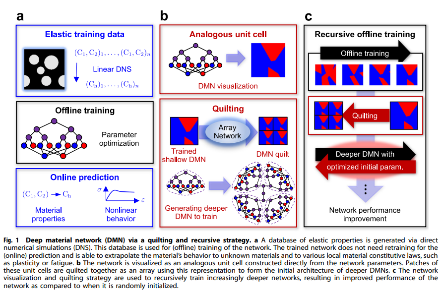
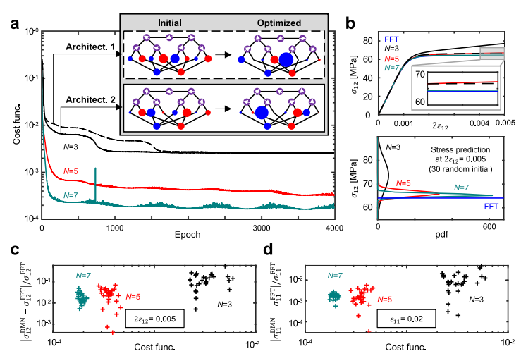
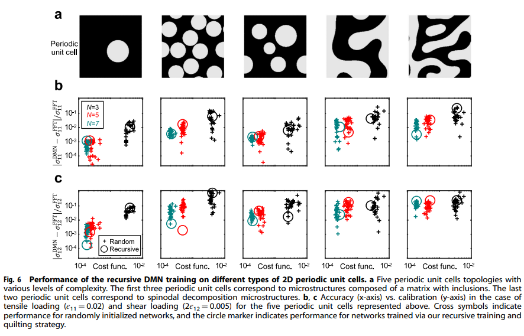
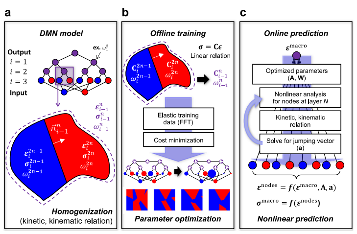
5. 機械学習を用いたフェロ磁性層のフィボナッチ準結晶積層における特異な磁気相の解明
・フェロ磁性層を準周期的に積層したフィボナッチ準結晶の磁気モデルを構築し、第一近接および第二近接間の磁気相互作用のパラメータ空間を探索した。
・主成分分析と密度ベースのクラスタリングを組み合わせた機械学習の手法を用いて、パラメータ空間における異なる磁気相を同定した。
・線形と非線形の両方の相を含む豊富な相図を得た。特に、非線形の準周期的なフェロ磁性配置であるFMAH相というユニークな相を発見した。
・簡略化されたモデルを用いて、各相の磁気配置を記述し、エネルギー、磁化、およびキラリティを計算した。
・ニューラルネットワークを訓練して、パラメータ空間における任意の点がどの相に属するかを予測する分類器を開発した。
・主成分分析と密度ベースのクラスタリングを組み合わせた機械学習の手法を用いて、パラメータ空間における異なる磁気相を同定した。
・線形と非線形の両方の相を含む豊富な相図を得た。特に、非線形の準周期的なフェロ磁性配置であるFMAH相というユニークな相を発見した。
・簡略化されたモデルを用いて、各相の磁気配置を記述し、エネルギー、磁化、およびキラリティを計算した。
・ニューラルネットワークを訓練して、パラメータ空間における任意の点がどの相に属するかを予測する分類器を開発した。
コメント：フィボナッチ構造の磁気スピンモデルなんて面白い。
補足：フィボナッチ準結晶：平行移動対称性はないが、ブラッグ回折によって鋭いピークが現れるような非周期的な構造を持つ結晶。フィボナッチ数列に基づいて生成される一次元の準結晶は最も単純であり、光学や音響などの分野で応用されている。磁気相互作用：電子スピンや原子核スピンなどの磁気モーメントが互いに作用する力。フェロ磁性相互作用は同じ方向に整列する傾向があり、反強磁性相互作用は反対方向に整列する傾向がある。第一近接間や第二近接間の相互作用だけでなく、より長距離の相互作用も存在する場合がある。主成分分析やクラスタリングなどの教師なし学習は、データの次元削減やパターン認識に有効である。ニューラルネットワークは多層の人工ニューロンから構成されるモデルであり、教師あり学習によって高い精度で分類や回帰などが可能である。
展望：本研究では、フェロ磁性層からなるフィボナッチ準結晶の磁気モデルを提案し、機械学習を用いてその相図を解析した。今後は、実際にこのような準結晶を構成することができるvan der Waals磁性材料の探索や、実験的な検証が望まれる。また、本研究では、第一近接および第二近接間の磁気相互作用のみを考慮したが、より長距離の相互作用や異方性などの効果も考慮することで、さらに多様な磁気相が現れる可能性がある。これらの効果を取り入れたモデルの構築や、機械学習の手法の改良も重要な課題である。さらに、本研究では一次元のフィボナッチ準結晶に限定したが、他の種類の準結晶や高次元の準結晶にも同様の手法を適用することで、新たな物理現象や応用可能性を探ることができる。準結晶の磁気特性に関する理論的・実験的な研究はまだ発展途上であり、今後も注目される分野である。
補足：フィボナッチ準結晶：平行移動対称性はないが、ブラッグ回折によって鋭いピークが現れるような非周期的な構造を持つ結晶。フィボナッチ数列に基づいて生成される一次元の準結晶は最も単純であり、光学や音響などの分野で応用されている。磁気相互作用：電子スピンや原子核スピンなどの磁気モーメントが互いに作用する力。フェロ磁性相互作用は同じ方向に整列する傾向があり、反強磁性相互作用は反対方向に整列する傾向がある。第一近接間や第二近接間の相互作用だけでなく、より長距離の相互作用も存在する場合がある。主成分分析やクラスタリングなどの教師なし学習は、データの次元削減やパターン認識に有効である。ニューラルネットワークは多層の人工ニューロンから構成されるモデルであり、教師あり学習によって高い精度で分類や回帰などが可能である。
展望：本研究では、フェロ磁性層からなるフィボナッチ準結晶の磁気モデルを提案し、機械学習を用いてその相図を解析した。今後は、実際にこのような準結晶を構成することができるvan der Waals磁性材料の探索や、実験的な検証が望まれる。また、本研究では、第一近接および第二近接間の磁気相互作用のみを考慮したが、より長距離の相互作用や異方性などの効果も考慮することで、さらに多様な磁気相が現れる可能性がある。これらの効果を取り入れたモデルの構築や、機械学習の手法の改良も重要な課題である。さらに、本研究では一次元のフィボナッチ準結晶に限定したが、他の種類の準結晶や高次元の準結晶にも同様の手法を適用することで、新たな物理現象や応用可能性を探ることができる。準結晶の磁気特性に関する理論的・実験的な研究はまだ発展途上であり、今後も注目される分野である。
DATE: 29 Jul 2023
Unveiling Exotic Magnetic Phases in Fibonacci Quasicrystalline Stacking of Ferromagnetic Layers through Machine Learning
Pablo S. Cornaglia et al. (Centro Atómico Bariloche and Instituto Balseiro, CNEA, Argentina)
https://arxiv.org/abs/2307.16052
Unveiling Exotic Magnetic Phases in Fibonacci Quasicrystalline Stacking of Ferromagnetic Layers through Machine Learning
Pablo S. Cornaglia et al. (Centro Atómico Bariloche and Instituto Balseiro, CNEA, Argentina)
https://arxiv.org/abs/2307.16052
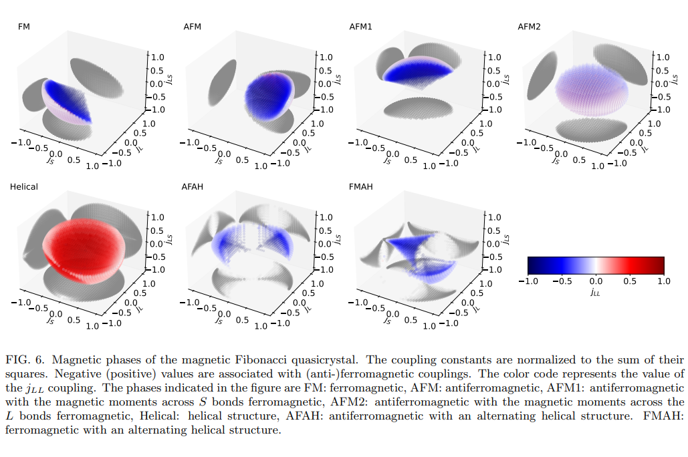
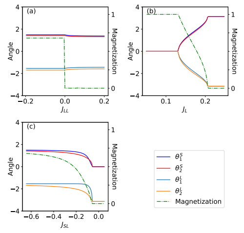
6. 比較的前方と逆設計パラダイム：耐熱高エントロピー合金のケーススタディ
耐熱高エントロピー合金（RHEA）の設計において、前方設計法（探索ベース）と逆設計法（生成モデリングベース）を直接比較した。単一条件と複数条件の両方のケースで、条件付き生成敵対的ネットワーク（cGAN）を用いた逆設計法を提案し、潜在空間算術を用いて生成された合金の元素分率を制御する方法を示した。逆設計法は、前方設計法よりも高い性能や低いコストの合金を生成する可能性があることを示した。また、目標値を変更しても即座に新しい候補を生成できるが、前方設計法は目標値や制約によっては再度最適化を行う必要があることを示した。
コメント：逆設計法でより高い性能を示す材料を創成するのはなかなか難しいと思うが、本研究ではその一例として耐熱ハイエントロピー合金を設計している。他の材料系で展開をぜひ進めてほしい。
用語：高エントロピー合金（HEA）：通常の合金とは異なり、5つ以上の主元素をそれぞれ5～35％の原子分率で含む特殊なクラスの合金である。高い強度や室温延性など、従来の合金では達成できない優れた特性を示すことがある。生成敵対的ネットワーク（GAN）：機械学習の枠組みの一種で、ランダムなノイズから現実的な見た目のサンプルを生成するジェネレーターと、サンプルが本物か偽物かを判別するディスクリミネーターという2つの深層ニューラルネットワークから構成される。ジェネレーターとディスクリミネーターは互いに競争しながら学習し、最終的にはジェネレーターが本物と区別できないサンプルを生成できるようになる。潜在空間算術：GANやVAEなどの潜在変数型の生成モデルでは、入力データの分布を低次元の連続空間に写像することで、新しいサンプルを生成することができる。この空間では、類似した観測値が近くにグループ化されるため、空間内で加減算や補間などの操作を行うことで、サンプルの特定の特徴を制御することができる。
手法論：本研究では、RHEAの設計における前方設計法と逆設計法の比較を行うために、まず、RHEAの合成データセットを作成した。これは、9種類の元素（Cr, Hf, Mo, Nb, Ta, Ti, V, W, Zr）の異なる組み合わせからなる56,837個の組成と、それらに対応する3つの性質（1200℃での引張強度、価格、密度）からなる。性質は、現象論的モデルや機械学習による代理モデルを用いて計算した。次に、cGANモデルを用いて逆設計法を実装した。cGANモデルは、4つの潜在変数と目標とする性質の値からなる入力ベクトルを受け取り、それに対応するRHEAの組成を出力する。性質の値は、標準化された後にその確率分布からサンプリングされる。cGANモデルは、合成データセットを用いて学習させた。さらに、潜在空間算術を用いて、生成されたRHEAの元素分率を制御する方法を提案した。これは、潜在空間内で特定の元素の分散が最大となる方向（概念ベクトル）を見つけ、その方向に沿って潜在変数を変化させることで、元素分率を増減させることができるという考えに基づく。この方法では、元素分率はcGANモデルの出力であるため、入力として与えることができない。最後に、前方設計法として、局所的な探索法や高スループットスクリーニング法や多目的最適化法を用いて、同じ目標値や制約条件でRHEAの候補を生成し、逆設計法と比較した。比較の結果、逆設計法は前方設計法よりも高い性能や低いコストの合金を生成する可能性があることが示された。また、逆設計法は目標値を変更しても即座に新しい候補を生成できるが、前方設計法は目標値や制約によっては再度最適化を行う必要があることが示された。
用語：高エントロピー合金（HEA）：通常の合金とは異なり、5つ以上の主元素をそれぞれ5～35％の原子分率で含む特殊なクラスの合金である。高い強度や室温延性など、従来の合金では達成できない優れた特性を示すことがある。生成敵対的ネットワーク（GAN）：機械学習の枠組みの一種で、ランダムなノイズから現実的な見た目のサンプルを生成するジェネレーターと、サンプルが本物か偽物かを判別するディスクリミネーターという2つの深層ニューラルネットワークから構成される。ジェネレーターとディスクリミネーターは互いに競争しながら学習し、最終的にはジェネレーターが本物と区別できないサンプルを生成できるようになる。潜在空間算術：GANやVAEなどの潜在変数型の生成モデルでは、入力データの分布を低次元の連続空間に写像することで、新しいサンプルを生成することができる。この空間では、類似した観測値が近くにグループ化されるため、空間内で加減算や補間などの操作を行うことで、サンプルの特定の特徴を制御することができる。
手法論：本研究では、RHEAの設計における前方設計法と逆設計法の比較を行うために、まず、RHEAの合成データセットを作成した。これは、9種類の元素（Cr, Hf, Mo, Nb, Ta, Ti, V, W, Zr）の異なる組み合わせからなる56,837個の組成と、それらに対応する3つの性質（1200℃での引張強度、価格、密度）からなる。性質は、現象論的モデルや機械学習による代理モデルを用いて計算した。次に、cGANモデルを用いて逆設計法を実装した。cGANモデルは、4つの潜在変数と目標とする性質の値からなる入力ベクトルを受け取り、それに対応するRHEAの組成を出力する。性質の値は、標準化された後にその確率分布からサンプリングされる。cGANモデルは、合成データセットを用いて学習させた。さらに、潜在空間算術を用いて、生成されたRHEAの元素分率を制御する方法を提案した。これは、潜在空間内で特定の元素の分散が最大となる方向（概念ベクトル）を見つけ、その方向に沿って潜在変数を変化させることで、元素分率を増減させることができるという考えに基づく。この方法では、元素分率はcGANモデルの出力であるため、入力として与えることができない。最後に、前方設計法として、局所的な探索法や高スループットスクリーニング法や多目的最適化法を用いて、同じ目標値や制約条件でRHEAの候補を生成し、逆設計法と比較した。比較の結果、逆設計法は前方設計法よりも高い性能や低いコストの合金を生成する可能性があることが示された。また、逆設計法は目標値を変更しても即座に新しい候補を生成できるが、前方設計法は目標値や制約によっては再度最適化を行う必要があることが示された。
DATE: 25 Jul 2023
Unveiling Exotic Magnetic Phases in Fibonacci Quasicrystalline Stacking of Ferromagnetic Layers through Machine Learning
Arindam Debnath et al. (CPennsylvania State University, USA)
https://arxiv.org/abs/2307.13581
Unveiling Exotic Magnetic Phases in Fibonacci Quasicrystalline Stacking of Ferromagnetic Layers through Machine Learning
Arindam Debnath et al. (CPennsylvania State University, USA)
https://arxiv.org/abs/2307.13581
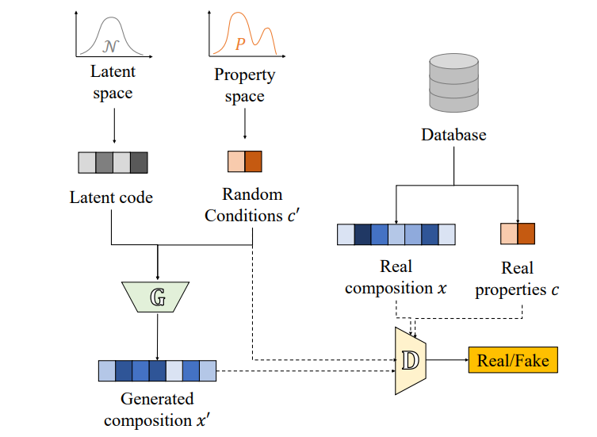
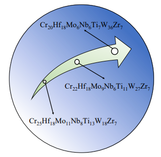
7. 高度に不均質な材料の非線形熱伝導率の予測のための自己最適化ウェーブレット学習法
不規則な階層構造を持つ高度に不均質な材料のコンピュータモデリング法を提案した。空間構造の不確実性、温度依存性の非線形性、材料特性の不確実性を考慮した確率的三階層均質化法を開発した。背景メッシュ法と充填技術を用いて、不均質な材料の幾何学的・物理的特徴を抽出し、材料データベースを構築した。ウェーブレット変換と人工ニューラルネットワークを統合したウェーブレット学習法を提案し、不均質な材料のマクロスケールでの等価非線形熱伝導率を予測した。先進的な知能最適化アルゴリズムを用いて、ウェーブレット学習法のネットワーク構造と学習率を自己最適化した。
コメント：ウェーブレット変換と自己組織化マップのような次元削減手法を組み合わせた新しい手法を提案している。かなり高度な解析で、短中期的な周期構造の抽出など、バルクへの適用も期待できそう。
用語：ウェーブレット変換：信号や画像などのデータを局所的かつ多解像度で分析するための数学的手法。データ圧縮や特徴抽出に有効である。人工ニューラルネットワーク：生物の神経系を模倣した人工知能の一種。複数の人工ニューロンが層状に接続されており、入力から出力へと非線形な関数近似やパターン認識を行うことができる。知能最適化アルゴリズム：自然界や社会現象に着想を得たメタヒューリスティックな探索手法。複雑で多峰性な最適化問題に対しても効率的に近似解を見つけることができる。
手法論：不均質な材料のコンピュータモデリングでは、楕円体粒子や繊維をランダムに配置するアルゴリズムを改良し、高い含有率や階層構造を再現した。確率的三階層均質化法では、マクロスケールからメソスケール、ミクロスケールへと順次ダウンスケーリングし、各スケールで非線形熱伝導方程式を解いた。また、各スケールで温度依存性や不確実性を多項式モデルやワイブル分布で表現した。材料データベースの構築では、背景メッシュ法と充填技術を用いて、各スケールで等間隔に格子点を設定し、各格子点に対応する材料パラメータや幾何学的情報を抽出した。特に、メソスケールでのマトリックス材料の欠損データに対しては、仮想的な充填材料を用いて補完した。ウェーブレット学習法では、ウェーブレット変換を用いて、材料データベースの高次元かつ高非線形な特徴を圧縮し、低次元化した。その後、人工ニューラルネットワークを用いて、低次元化されたデータから等価非線形熱伝導率を予測するモデルを学習した。自己最適化機構では、粒子群最適化法や人工蜂コロニー法などの知能最適化アルゴリズムを用いて、ウェーブレット学習法のネットワーク構造や学習率などのハイパーパラメータを自動的に調整し、最適な予測モデルを探索した。
用語：ウェーブレット変換：信号や画像などのデータを局所的かつ多解像度で分析するための数学的手法。データ圧縮や特徴抽出に有効である。人工ニューラルネットワーク：生物の神経系を模倣した人工知能の一種。複数の人工ニューロンが層状に接続されており、入力から出力へと非線形な関数近似やパターン認識を行うことができる。知能最適化アルゴリズム：自然界や社会現象に着想を得たメタヒューリスティックな探索手法。複雑で多峰性な最適化問題に対しても効率的に近似解を見つけることができる。
手法論：不均質な材料のコンピュータモデリングでは、楕円体粒子や繊維をランダムに配置するアルゴリズムを改良し、高い含有率や階層構造を再現した。確率的三階層均質化法では、マクロスケールからメソスケール、ミクロスケールへと順次ダウンスケーリングし、各スケールで非線形熱伝導方程式を解いた。また、各スケールで温度依存性や不確実性を多項式モデルやワイブル分布で表現した。材料データベースの構築では、背景メッシュ法と充填技術を用いて、各スケールで等間隔に格子点を設定し、各格子点に対応する材料パラメータや幾何学的情報を抽出した。特に、メソスケールでのマトリックス材料の欠損データに対しては、仮想的な充填材料を用いて補完した。ウェーブレット学習法では、ウェーブレット変換を用いて、材料データベースの高次元かつ高非線形な特徴を圧縮し、低次元化した。その後、人工ニューラルネットワークを用いて、低次元化されたデータから等価非線形熱伝導率を予測するモデルを学習した。自己最適化機構では、粒子群最適化法や人工蜂コロニー法などの知能最適化アルゴリズムを用いて、ウェーブレット学習法のネットワーク構造や学習率などのハイパーパラメータを自動的に調整し、最適な予測モデルを探索した。
DATE: 11 Aug 2023 (v2), 28 Jul 2023 (v1)
Self-optimization wavelet-learning method for predicting nonlinear thermal conductivity of highly heterogeneous materials with randomly hierarchical configurations
Jiale Linghu et al. (Xidian University, China)
https://arxiv.org/abs/2307.15403
Self-optimization wavelet-learning method for predicting nonlinear thermal conductivity of highly heterogeneous materials with randomly hierarchical configurations
Jiale Linghu et al. (Xidian University, China)
https://arxiv.org/abs/2307.15403
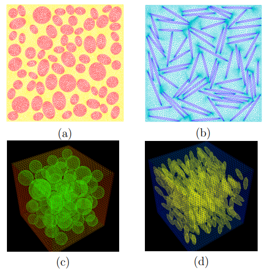
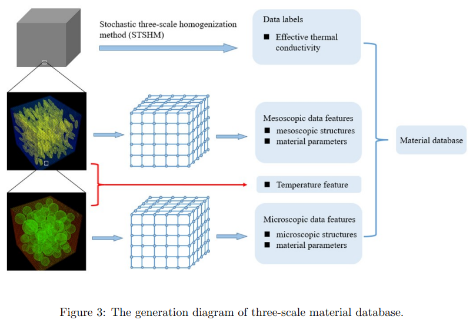
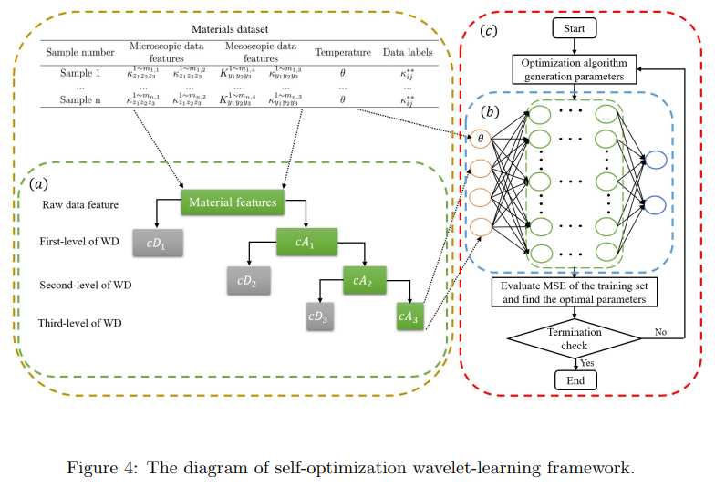